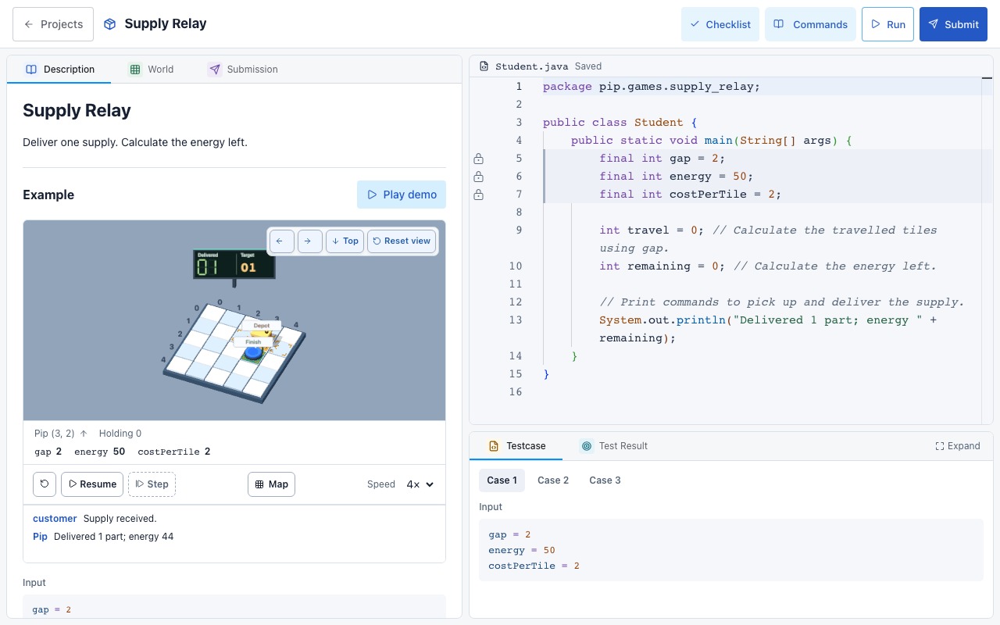

Java practice
with Pip.
Learn an idea, write real Java, and watch a robot follow your code. Lessons lead into projects and independent coding challenges.
Version 0.10.0 · Apple silicon
Java is included. No Node.js or JDK setup.
Installation instructions

The course
Five programming modules cover Java basics, loops, methods, decisions, and arrays. Git lessons cover saving and sharing changes.
Projects open after their required lessons. Game projects include a code refresher, commands, and a checklist.
Code, run, submit
The editor highlights Java and saves automatically. Game projects include 3D worked examples and replay controls.
In game projects and independent challenges, Run tries three public cases and Submit checks at least twenty. Independent challenges keep hints and autocomplete off.
Install on your Mac
- Download the
.dmgfile and open it. - Drag Pip Workshop into Applications.
- Open Pip Workshop from Applications and choose a lesson.
First launch
This release is ad-hoc signed and has not been notarized by Apple. If macOS blocks it, first try opening Pip, then find Pip in System Settings > Privacy & Security and choose Open Anyway. Confirm only if you trust this download. Apple’s opening instructions.
Updating
Quit Pip, then replace it in Applications. Your Java files and progress stay in ~/.pip-java/; keep that folder.